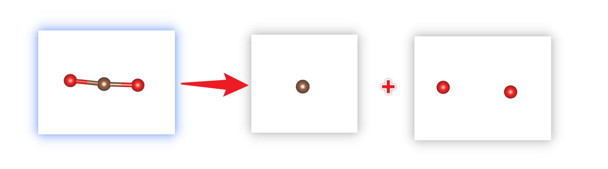

POSCAR
There are several operations that rsgrad pos can do
- Convert the fractional coordinates to Cartesian coordinates or convert reversely;
- Split the POSCAR and save the two parts;
This command is useful when you want to calculate charge density difference and adsorption energy. - Format the POSCAR and add element symbol tags to each atom.
Help Message
$ rsgrad pos --help
rsgrad-pos
Operation(s) about POSCAR, including split it into two POSCARs
USAGE:
rsgrad pos [OPTIONS] [--] [POSCAR]
ARGS:
<POSCAR>
Specify the input POSCAR file
[default: ./POSCAR]
OPTIONS:
-a, --a-name <A_NAME>
Splitted POSCAR path with selected atoms
[default: POSCAR_A]
-b, --b-name <B_NAME>
Splitted POSCAR path with complement of `a_name`
[default: POSCAR_B]
-c, --cartesian
Cartesian coordinates is used in writting POSCAR
--convert
Convert POSCAR to cartesian coordinates or fractional coordinates
--converted <CONVERTED>
The target path of converted POSCAR
[default: POSCAR_new]
-h, --help
Print help information
-i, --select-indices <SELECT_INDICES>...
Selects the indices to operate.
Step indices start from '1', if '0' is given, all the structures will be selected. Step
indices can be negative, where negative index means counting reversely. E.g. "-i -2 -1 1
2 3" means selecting the last two and the first three atom.
--no-add-symbols-tags
The symbols of each atom will not be written as comment in POSCAR
--no-preserve-constraints
Atom constraints will be dropped when writting POSCAR
-s, --split
Split POSCAR according to selected_indices
Examples
- Format the POSCAR to add element symbol tags
The original POSCAR of CO2:
C O
1.0000000000000000
20.0000000000000000 0.0000000000000000 0.0000000000000000
0.0000000000000000 20.0000000000000000 0.0000000000000000
0.0000000000000000 0.0000000000000000 20.0000000000000000
C O
1 2
Direct
0.5000000000000000 0.5000000000000000 -0.5000000000000000
0.5754584707965210 0.4974961803083730 0.5000000000000000
0.4249089651951450 0.5078477015701101 0.5000000000000000
Then run rsgrad pos POSCAR --convert
$ rsgrad pos POSCAR --convert
[2022-07-14T15:38:47Z INFO rsgrad::commands::pos] Reading POSCAR file "POSCAR" ...
[2022-07-14T15:38:47Z INFO rsgrad::commands::pos] Converting it to "POSCAR_new"
[2022-07-14T15:38:47Z INFO rsgrad::commands::pos] Done
[2022-07-14T15:38:47Z INFO rsgrad] Time used: 1.96796ms
The formatted file should be POSCAR_new
C O
1.0000000
20.000000000 0.000000000 0.000000000
0.000000000 20.000000000 0.000000000
0.000000000 0.000000000 20.000000000
C O
1 2
Direct
0.5000000000 0.5000000000 -0.5000000000 ! C-001 1
0.5754584708 0.4974961803 0.5000000000 ! O-001 2
0.4249089652 0.5078477016 0.5000000000 ! O-002 3
- Convert POSCAR to Cartesian coordinates
Just run rsgrad pos POSCAR --convert --cartesian
$ rsgrad pos POSCAR --convert --cartesian
[2022-07-14T15:40:33Z INFO rsgrad::commands::pos] Reading POSCAR file "POSCAR" ...
[2022-07-14T15:40:33Z INFO rsgrad::commands::pos] Converting it to "POSCAR_new"
[2022-07-14T15:40:33Z INFO rsgrad::commands::pos] Done
[2022-07-14T15:40:33Z INFO rsgrad] Time used: 1.57861ms
The converted file POSCAR_new should be like
C O
1.0000000
20.000000000 0.000000000 0.000000000
0.000000000 20.000000000 0.000000000
0.000000000 0.000000000 20.000000000
C O
1 2
Cartesian
10.0000000000 10.0000000000 -10.0000000000 ! C-001 1
11.5091694159 9.9499236062 10.0000000000 ! O-001 2
8.4981793039 10.1569540314 10.0000000000 ! O-002 3
- Split the POSCAR
Let take the CO2 structure as the example again. Here we will take the C atom out to see what the operation does.
The C atom index is 1, so we should run rsgrad pos POSCAR -s -i 1
$ rsgrad pos POSCAR -s -i 1
[2022-07-14T15:49:32Z INFO rsgrad::commands::pos] Reading POSCAR file "POSCAR" ...
[2022-07-14T15:49:32Z INFO rsgrad::commands::pos] Splitting it to "POSCAR_A" and "POSCAR_B" ...
[2022-07-14T15:49:32Z INFO rsgrad::commands::pos] "POSCAR_A" contains
[2022-07-14T15:49:32Z INFO rsgrad::commands::pos] C 1
[2022-07-14T15:49:32Z INFO rsgrad::commands::pos] "POSCAR_B" contains
[2022-07-14T15:49:32Z INFO rsgrad::commands::pos] O 2
[2022-07-14T15:49:32Z INFO rsgrad::commands::pos] "POSCAR_A" written
[2022-07-14T15:49:32Z INFO rsgrad::commands::pos] "POSCAR_B" written
[2022-07-14T15:49:32Z INFO rsgrad] Time used: 2.11275ms
The separated files should be like
$ bat POSCAR_A POSCAR_B
───────┬──────────────────────────────────────────────────────────────────────────
│ File: POSCAR_A
───────┼──────────────────────────────────────────────────────────────────────────
1 │ Generated by rsgrad, POSCAR with selected atoms
2 │ 1.0000000
3 │ 20.000000000 0.000000000 0.000000000
4 │ 0.000000000 20.000000000 0.000000000
5 │ 0.000000000 0.000000000 20.000000000
6 │ C
7 │ 1
8 │ Direct
9 │ 0.5000000000 0.5000000000 -0.5000000000 ! C-001 1
───────┴──────────────────────────────────────────────────────────────────────────
───────┬──────────────────────────────────────────────────────────────────────────
│ File: POSCAR_B
───────┼──────────────────────────────────────────────────────────────────────────
1 │ Generated by rsgrad, POSCAR complement
2 │ 1.0000000
3 │ 20.000000000 0.000000000 0.000000000
4 │ 0.000000000 20.000000000 0.000000000
5 │ 0.000000000 0.000000000 20.000000000
6 │ O
7 │ 2
8 │ Direct
9 │ 0.5754584708 0.4974961803 0.5000000000 ! O-001 1
10 │ 0.4249089652 0.5078477016 0.5000000000 ! O-002 2
───────┴──────────────────────────────────────────────────────────────────────────
The process schema:
